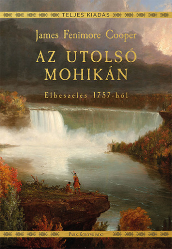

Az utolsó mohikán
Az utolsó mohikán
A történet a 18. században játszódik, mikor az angol és a francia gyarmatosítók harcoltak egymással Észak-Amerika birtokaiért, az indián törzsek pedig részben a franciák, részben az angolok mellé álltak. A történet elején Alice és Cora apjukhoz, Munro ezredeshez tartanak, a franciáktól ostromlott William Henry-erődbe, Duncan Heyward őrnagy és David Gamut énekmester kíséretében. Indián vezetőjük, Magua azonban tévútra vezeti őket, mert bosszút akar állni az erőd parancsnokán, Munro ezredesen, akit felelősnek tart saját családja elpusztításáért. Az utazók még időben találkoznak az éppen vadászó Sólyomszemmel, és két indián társával, Unkasszal és Csingacsgukkal. Apa és fia a mohikán törzs két utolsó életben maradt tagja. Segítségükkel sikerül eljutniuk az erődbe, de az erőd feladja a harcot a franciákkal szemben. Az elvonulókat Magua emberei lemészárolják, a bosszúszomjas Magua megöli Munro ezredest is, két lányát pedig fogságba ejti. A történet végén Sólyomszem és társai legyőzik Maguát és megmentik Alice-t és Heyward őrnagyot, de a leszámolásban Corát leszúrják Magua emberei, és párbajban Magua megöli Unkaszt. Apja, Csingacsguk marad „az utolsó mohikán”.
Forrás: wikipedia
Kiadások
Az utolsó mohikán
Kiadás leírása
Az utolsó mohikán
Kiadás leírása
Az utolsó mohikán
Kiadás leírása
A történet valós elemei
A William Henry-erőd(wd) New York államban, a George-tó(wd) dél végén fekszik. A hétéves háború során, 1755-ben építették, miután a britek csatában elfoglalták a tó déli partvidékét. A franciák ugyanabban az évben, a tó északi végében felépítették a Ticonderoga ellenerődöt. A William Henry-erőd a brit támadások fontos kiinduló bázisává vált. 1757 nyarán Louis-Joseph de Montcalm(wd) márki, kanadai francia főparancsnok vezetésével a franciák ostrom alá vették az erődöt, melyet George Monro(wd) alezredes (1700–1757) védelmezett. A harcban mindkét részről reguláris katonák, polgári milicisták (farmerek) és szövetséges indián csoportok vettek részt. Az erőd egy ideig ellenállt, de miután Daniel Webb(wd) tábornok déli irányból indított felmentő támadása kudarcot vallott, augusztus 10-én Monro szabad elvonulás fejében átadta az erődöt Montcalmnak. A kivonulókat azonban a franciákkal szövetséges indiánok – akikat a kapitulációs szerződés megfosztott áhított zsákmányuktól – megtámadták, kifosztották, mintegy 150–180 embert megölve. Az eseményt a brit propaganda – beleértve James Fenimore Coopert is – később felnagyította, megalkotva a több ezer halottat eredményező „William Henry-mészárlás” legendáját, amelyet az álnok Montcalm rendelt volna el. Valójában a francia tisztek személyes, fegyveres beavatkozása megállította a vérengzést. Augusztus 17-én Monro és katonái, valamint az őket kísérő civilek, asszonyok, gyermekek eljutottak Albanybe. Helytállásáért Monro alezredest előléptetésre és kitüntetésre terjesztették fel, de november 3-án szívrohamban elhunyt. Két fiút és egy leányt hagyott hátra. Cooper a regényében Munro ezredes néven szerepelteti, két leánya, Cora és Alice kitalált személyek. Tamanend(wd) (vagy Tammany, 1625–1700), a Delaware folyó völgyében élő lenni-lenape törzsszövetség – akiket az európaiak delavároknak neveztek – legfőbb főnöke, a bölcsek tanácsának vezetője volt, aki a 17. század második felében több békeszerződést kötött a pennsylvaniai kvéker telepesek képviselőjével, William Pennnel. A Cooper által írt történet idejében, 1757-ben azonban a valóságos „Tamenund” már fél évszázada halott volt. Személye az amerikai őslakos identitás egyik jelképévé vált.
Forrás: wikipedia
Fontosabb szereplők
- Natty Bumppo - Sólyomszem - vadász
- Csingacsguk, mohikán törzsfőnök
- Unkasz, Csingacsguk fia
- Munro alezredes, angol katonatiszt
- Magua, irokéz indián, a ravasz róka
- Cora és Alice Munro, Munro alezredes lányai
- Duncan Heyward, katona
- David Gamut, énektanár